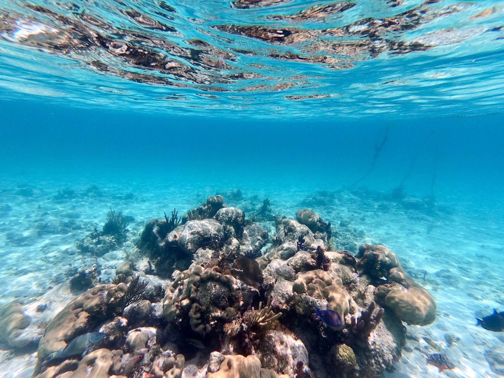
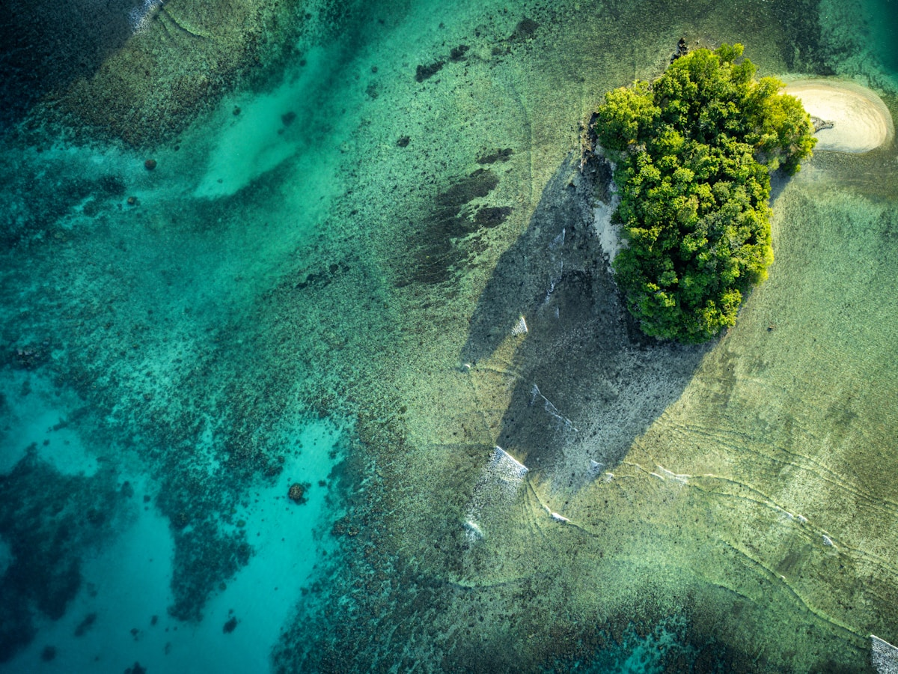
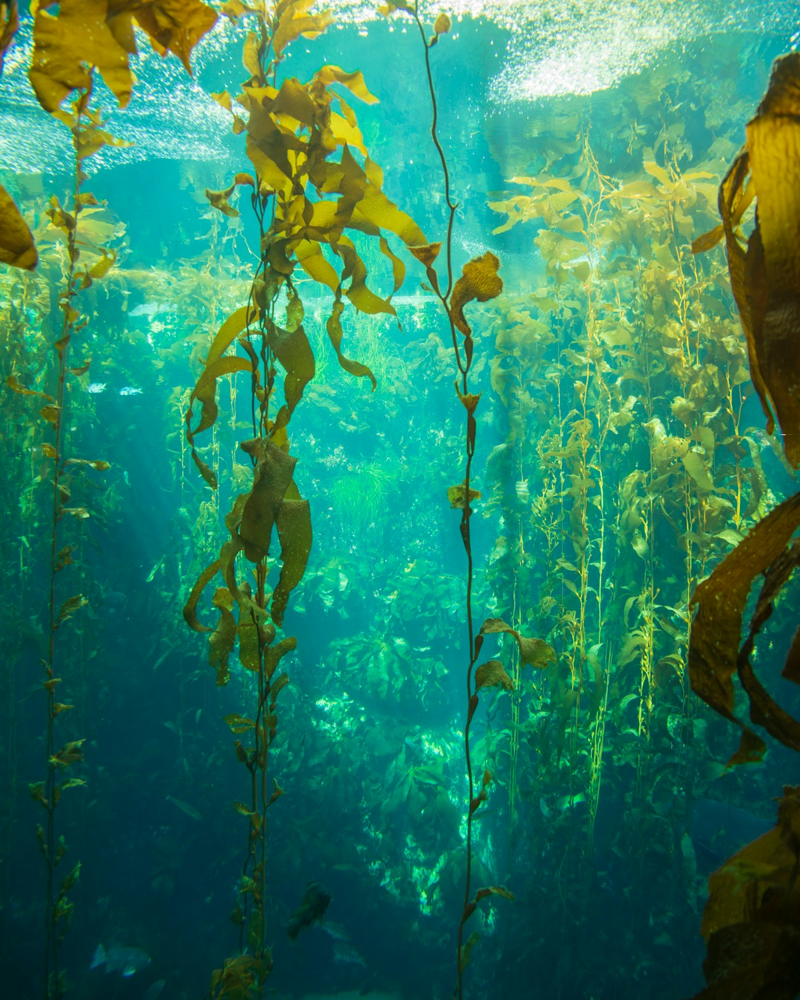
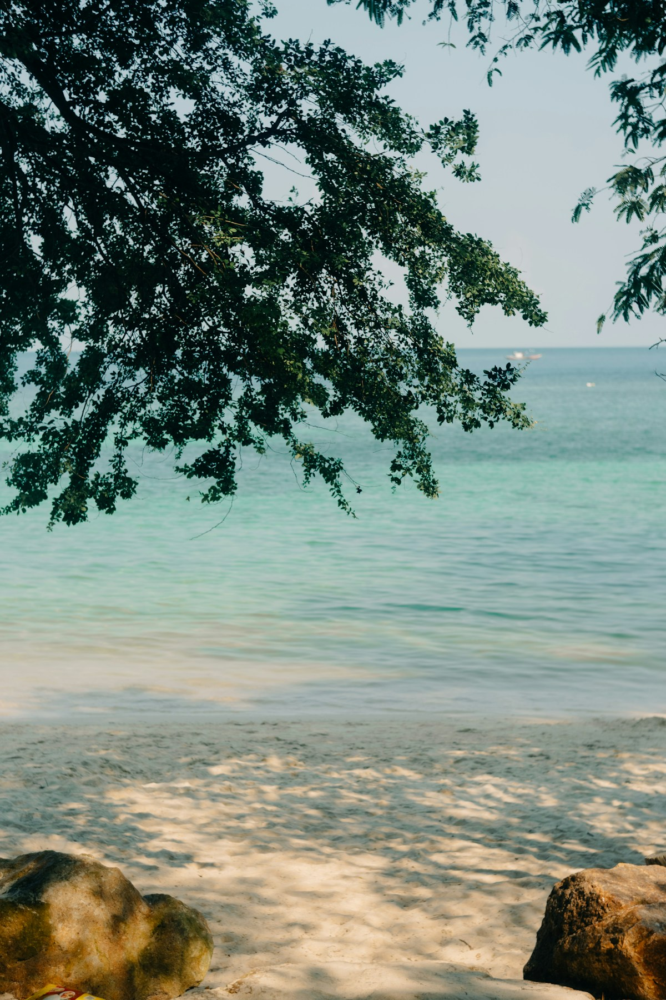
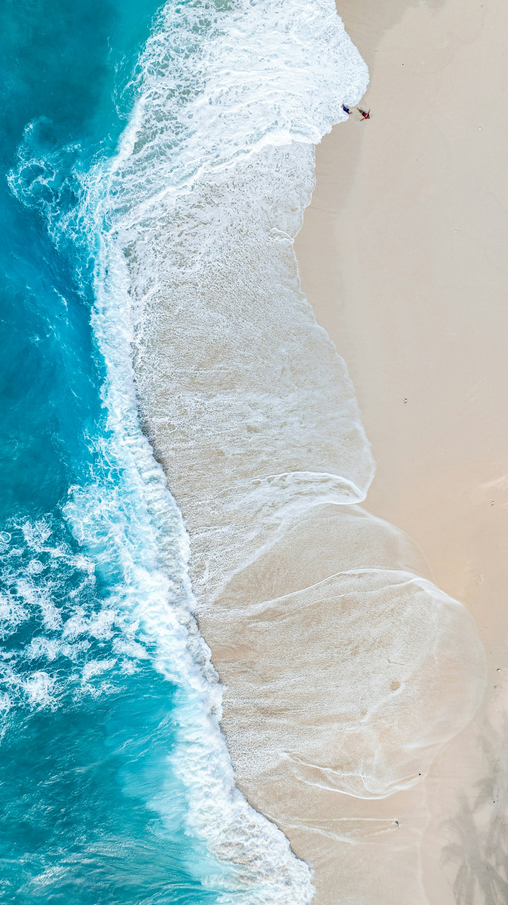
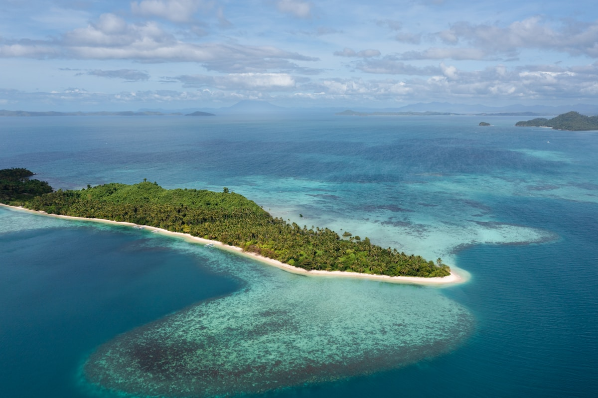

1核心结论
北京
→
首尔（转机）
→
科罗尔
→
水母湖
→
大断层
→
岩石群岛
→
返程
🌊 7 天怎么安排最合理
帕劳是「一片海、数百座石山」的潜水天堂：科罗尔是唯一的落脚点，洛克群岛南方泻湖是世界自然与文化双遗产，水母湖与大断层是最不能错过的两张名片。7 天刚好把科罗尔 2 天 + 洛克群岛出海 4 天走完——每天出海一次，节奏不赶，第二天凌晨的返程航班也不浪费。
| 事项 | 结论 |
|---|---|
| 事项 | 结论 |
| 签证（最关键） | 中国护照落地签 30 天；登机须出示返程机票；2023 年起入境前 72 小时内要在 palautravel.pw 填电子申报表并打印 QR Code，入境时还需在「帕劳誓词」上签名 |
| 机票航线 | 北京✈首尔（仁川）✈科罗尔，韩亚/大韩航空，全程约 9–12 小时；无直飞，首尔是主要转机点 |
| 出海必买 | 水母湖许可证 US$100（含洛克群岛，5 天有效）；只去洛克群岛则 US$50；出海需持证，可在当地旅行社代办 |
| 行程链 | 科罗尔 → 洛克群岛东线（水母湖/牛奶湖）→ 西线（大断层/软珊瑚）→ 岩石群岛 → 返程 |
| 预算（人均） | 经济 15000–22000 ／ 标准 28000–42000 ／ 舒适 55000–80000（人民币） |
| 三件提前事 | ① 订韩亚/大韩转机机票 ② 预约水母湖+洛克群岛出海行程 ③ 酒店尽量选科罗尔市区（近码头） |
| 季节提醒 | 11–4 月旱季风浪小最适合出海；5–10 月雨季阵雨多但价格低；紫外线强度是日本 7 倍，防晒必备 |
| 支付 | 全岛通用美元，几乎都要现金；科罗尔有 ATM 但建议备足小额美元（出海税、小费均现金） |
⚠️ 两个容易忽略的点
① 水母湖不是「想进就进」：必须持水母湖许可证（US$100）且跟当地持牌旅行社出海，独立前往不被允许；且水母数量受气候影响波动大，出行前最好确认近期开放与密度。② 帕劳几乎全部依赖现金，出海税、导游小费、岛上餐费都要美元现金，出发前按预算备足，机场汇率一般。
2推荐行程 · 7 天版
以下为 7 天 6 晚的推荐节奏：前两天倒时差、玩科罗尔市区，后四天每天出海一个方向，最后一天凌晨航班返程。每日出海 ≤1 次，浮潜项目为主，体力友好。
| 日期 | 行程 | 过夜地 | 主题 |
|---|---|---|---|
| D1 抵科罗尔 | 北京✈首尔✈科罗尔（约 9h 转机），凌晨 04:00 抵达，入住科罗尔市区酒店补觉 | 科罗尔 | 抵达+休整 |
| D2 | 科罗尔市区：安德梅尔观景台 → 男人屋(巴艾)与帕劳国家博物馆 → WCTC 超市补货 → 日落海边 | 科罗尔 | 市区漫步 |
| D3 | 洛克群岛东线：水母湖浮潜 → 牛奶湖天然SPA → 无人岛野餐 | 科罗尔 | 出海东线 |
| D4 | 洛克群岛西线：大断层浮潜 → 软珊瑚区 → 德国水道 → 干贝城 | 科罗尔 | 出海西线 |
| D5 | 洛克群岛精选：长滩(长沙滩岛) → 七彩鱼世界 → 玫瑰珊瑚 → 二战日舰沉船 | 科罗尔 | 出海精选 |
| D6 | 岩石群岛深度：鲨鱼城 → 海钓（钓税 US$20）或 北岛天使瀑布可选 | 科罗尔 | 深度出海 |
| D7 返程 | 凌晨退房，乘 05:00 航班科罗尔✈首尔转北京，当晚抵达 | — | 收尾 |
🧭 路线可调原则
时间紧可把 D5 与 D6 合并成一天，砍掉北岛瀑布；带老人小孩建议把出海减为 3 天（水母湖+大断层+长滩即可），科罗尔留 3 天。体力好、想潜水考证的，可在 D6 换成 PADI 开放水域考证（约 US$450–600）。
3逐小时时间线
以下为 7 天全程的逐小时执行时间线，可当作「当天打开照着走」的清单。标注 ※ 的可选项视体力与天气取舍。
D1 · 抵达科罗尔
转机 9 小时，凌晨落地
🛫 抵达日
| 时间 | 事项 |
|---|---|
| 17:30–20:25 | 北京✈首尔仁川（OZ336 约 2h55m），仁川机场转机约 2–3h，注意行李直挂（北京托运直接到科罗尔取） |
| 23:10–04:00+1 | 首尔✈科罗尔（OZ609 约 4h50m），机上休息 |
| 04:00–05:30 | 抵达帕劳国际机场，落地签+盖「帕劳誓词」章+电子申报表 QR 核验，中文导游/酒店接机 |
| 06:00–12:00 | 入住科罗尔市区酒店，补觉倒时差（时差仅 +1h，很快适应） |
| 15:00–18:00 | 傍晚海边散步，WCTC 超市买水与防晒，晚餐：海鲜烧烤/当地鱼餐 |
帕劳航班到达都是凌晨，第一晚务必订可提前入住或保证中午入住的酒店；转机时在首尔机场可买到电话卡或提前开好国际漫游。
D2 · 科罗尔市区
观景台 + 博物馆 + 传统村落
🏙 市区日
| 时间 | 事项 |
|---|---|
| 08:30–10:30 | 安德梅尔山观景台（免费）：俯瞰科罗尔水道与洛克群岛，天气好能看到整片泻湖 |
| 10:30–12:00 | 帕劳国家博物馆（门票约 US$5）：帕劳故事板、独木舟、二战遗物 |
| 12:00–13:30 | 午餐：帕劳红树林蟹/椰子蟹（当地名菜，提前问价） |
| 14:00–16:00 | 男人屋（巴艾）（免费）：帕劳传统酋长议事屋，房檐雕刻讲述神话 |
| 17:00–19:00 | 科罗尔主街散步 + 码头看日落，晚餐：当地海鲜市场自购代加工 |
帕劳椰子蟹价格高（一只常超 US$100），点单前务必确认按只还是按重量计价；男人屋按传统妇女不进，但游客参观无碍。
D3 · 洛克群岛东线
水母湖 + 牛奶湖
水母湖日
| 时间 | 事项 |
|---|---|
| 08:30 | 科罗尔码头集合，持水母湖许可证（US$100，5 天有效）登快艇 |
| 09:30–11:30 | 水母湖（Eil Malk 岛，船程约 45min）：穿水母衣浮潜，与黄金水母共游；禁止涂防晒霜下水，水母需防紫外线 |
| 11:30–12:30 | 登岛换装、简单休整 |
| 12:30–14:00 | 牛奶湖（天然 SPA）：湖底白泥护肤，抹满全身拍照留念 |
| 14:00–16:00 | 无人岛野餐 + 浮潜点加游，返回科罗尔 |
水母衣/防寒衣租借约 US$11/天，有度数面镜 US$8.8、蛙鞋 US$6.6；水母湖内严禁使用防晒霜和触碰水母。
D4 · 洛克群岛西线
大断层 + 软珊瑚 + 德国水道
🐠 大断层日
| 时间 | 事项 |
|---|---|
| 08:30 | 码头集合出发（许可证已含洛克群岛，无需另购） |
| 09:30–11:00 | 大断层 Big Drop Off：世界顶级浮潜/潜水点，珊瑚墙从水面直落深海，鱼群密度惊人 |
| 11:00–12:00 | 德国水道（German Channel）：二战时期德国人炸开的水道，鱼群与鲨鱼出没 |
| 12:00–13:30 | 无人岛或长沙滩岛午餐 |
| 13:30–15:30 | 软珊瑚区（七彩软珊瑚）+ 干贝城（巨型砗磲贝） |
| 16:00 | 返航科罗尔，晚餐自由安排 |
大断层流较大，浮潜跟紧向导；干贝城水深较浅但也要留意珊瑚礁，穿好水母鞋。
D5 · 洛克群岛精选
长滩 + 七彩鱼 + 沉船
🏝 长沙滩日
| 时间 | 事项 |
|---|---|
| 08:30 | 码头集合出发 |
| 09:30–11:00 | 长滩（长沙滩岛）：退潮时露出新月形白沙洲，站在浅滩上宛如「海上行走」，最出片的机位 |
| 11:00–12:00 | 七彩鱼世界：巨型七彩珊瑚礁，喂鱼时成群彩鱼环绕 |
| 12:00–13:30 | 无人岛野餐，岛上吊床小憩 |
| 13:30–15:30 | 玫瑰珊瑚区 + 二战日舰沉船：历史与珊瑚共存的经典潜点 |
| 16:00 | 返航，晚餐可选海鲜火锅/日式料理 |
长滩是否能看到白沙洲取决于潮汐，行程确认时问旅行社当天退潮时间；沉船水域鱼多但注意安全，别游进舱体。
D6 · 岩石群岛深度
鲨鱼城 + 海钓/北岛
🦈 深度出海日
| 时间 | 事项 |
|---|---|
| 08:30 | 码头集合，可加购钓鱼税（US$20/人，30 天有效） |
| 09:30–11:00 | 鲨鱼城：珊瑚礁中成群的礁鲨与灰礁鲨巡游，浮潜即可观赏 |
| 11:00–12:30 | 海钓体验（可选）：钓获可让船家代加工午餐 |
| 12:30–14:00 | 无人岛海鲜午餐（烤鱼、烤鸡、椰子） |
| 14:00–16:30 | 北岛（巴伯尔图阿普岛）天使瀑布（含门票约 US$10，可选）或 自由浮潜 |
| 17:00 | 返航，晚上海边 BBQ 收官 |
鲨鱼城是浮潜点不是潜水点，跟紧向导即可安全观赏；北岛瀑布往返含山路，穿防滑鞋。若全天出海疲惫，可改市区按摩休息。
D7 · 返程
凌晨航班回京
🚄 返程日
| 时间 | 事项 |
|---|---|
| 00:00–02:30 | 退房，乘车前往帕劳国际机场（约 15–20min） |
| 03:00 | 办理登机，帕劳机场很小但航班集中，提前 2h 到 |
| 05:00–09:55 | 科罗尔✈首尔仁川（OZ610） |
| 13:00–14:10 | 首尔✈北京（OZ333），下午抵京，入境回家 |
返程是凌晨航班，前一晚把行李提前收拾好；帕劳机场离境税已含在机票里，无需另付。
4景点图鉴
必去（必去）/ 顺路（顺路）/ 可跳过（可跳过）。
必去
洛克群岛·水母湖 许可证 US$100（5 天）
帕劳名片。黄金水母无毒共游，Eil Malk 岛内陆咸水湖。

必去大断层 Big Drop Off 含在洛克群岛许可
世界顶级浮潜点。珊瑚墙直落深海，鱼群密度惊人。

必去牛奶湖 含在洛克群岛许可
天然白泥 SPA。火山泥美容，洛克群岛经典一站。
 必去
必去长滩（长沙滩岛） 含在洛克群岛许可
退潮白沙洲。海上行走机位，帕劳最出片海滩。

顺路干贝城 含在洛克群岛许可
百年巨型砗磲贝。彩色巨贝群，浅水浮潜可达。

顺路软珊瑚区 含在洛克群岛许可
七彩软珊瑚随流摇曳，色彩饱和度拉满。

顺路鲨鱼城 含在洛克群岛许可
礁鲨群巡游，浮潜即可观赏，刺激又安全。

顺路科罗尔市区 博物馆约 US$5
安德梅尔观景台 + 男人屋与博物馆，帕劳人文初体验。
图片为 Unsplash 主题图（水母湖、珊瑚礁、白沙洲、海岛航拍等均与帕劳海域相近的实景），用于页面配图。更多免费玩法：科罗尔海滨步道、WCTC 超市采购、帕劳夜市烧烤。
5路线地图
点击左侧节点可在地图上定位；点击地图 marker 会高亮对应节点。坐标为 WGS-84 转 GCJ-02 纠偏后标注。
6预算明细（三档）
以下为单人、不含购物的估算，人民币计价；出发地基准北京。帕劳使用美元，按 1 美元 ≈ 7.2 元估算。往返机票按经首尔转机淡季 6000–11000 元计，出海税/许可证为硬性支出。
| 项目 | 经济（15000–22000） | 标准（28000–42000） | 舒适（55000–80000） |
|---|---|---|---|
| 往返机票 | 北京✈首尔✈科罗尔 6000–8000 | 含旺季/直连段 9000–13000 | 商务舱/灵活 16000–25000 |
| 住宿（6 晚） | 市区旅馆/民宿 350–700/晚 | 中档度假村 1200–2200/晚 | 豪华度假村 3500–8000/晚 |
| 出海与许可证 | 洛克群岛许可 US$50×2 类 约 800 | 水母湖许可 US$100 + 3 天出海 约 2600–3500 | 含私人包船+海钓 约 6000–9000 |
| 餐饮（7 天） | 简餐+市场海鲜 1500–2500 | 海鲜餐厅+BBQ 3500–5000 | 度假村正餐+椰子蟹 8000–12000 |
| 市内交通与杂费 | 打车+超市 400–700 | 接送机+租车少量 800–1500 | 全程接送+按摩 2500–4500 |
💰 标准档示例账单（人均约 30000 元）
往返机票 9500 + 住宿 6 晚 9000（平均 1500/晚）+ 水母湖许可 720 + 出海 3 天 3000 + 餐饮 4200 + 接送/杂费 1200 ≈ 28000–32000 元。大头是机票与住宿；出海天数合并成 3 个全天能省不少船费。
7备选方案
7.1 潜水考证版（+2 天）
把行程拉长到 9–10 天，在 D5–D6 报名 PADI 开放水域考证（约 US$450–600，含 4 次潜水），可下蓝洞、德国水道深潜；不考证就保持浮潜为主。帕劳是世界顶级潜水地，考了证才算玩到精髓。
7.2 亲子版调整
- 出海减为 3 天：水母湖、大断层、长滩
- 加一天北岛瀑布与红树林皮划艇（水流平缓）
- 科罗尔留 3 天，节奏更慢
- 水母湖 6 岁以下儿童免许可证
7.3 雨季省钱版（5–10 月）
雨季阵雨多为午后短时雨，出海照常但浪稍大；机票与酒店便宜 20–30%，7 天可压到经济档下限。注意雨天快艇颠簸，晕船药备好。
8交通与住宿
8.1 北京 ⇄ 帕劳 交通
| 方式 | 时长 | 参考价 | 备注 |
|---|---|---|---|
| 首尔转机（主选） | 北京→首尔 2.5–3h + 首尔→科罗尔 4.5–5h，全程约 9–12h | 往返 6000–11000 元 | 韩亚/大韩航空，每周 2 班，到达为凌晨 |
| 香港/马尼拉转机 | 13–20h | 5000–9000 元 | 中华航空/菲律宾航空，航班少 |
| 直飞 | — | — | 中国大陆无直飞，只能转机 |
⚠️ 帕劳境内交通核心提醒
帕劳没有公共交通，出行基本靠酒店接送、包车和出海快艇。科罗尔市区很小，主街步行可逛；去码头、机场一般由旅行社/酒店接送。所有出海必须走当地持牌旅行社（政府规定），费用通常含船、向导、装备，不含许可证与税费。
8.2 帕劳境内交通
- 出海快艇：科罗尔→水母湖约 45min、→大断层约 40min，一日游含接送
- 包船/私人船：约 US$150/船/天（含船长+助手，不含许可证），人少可以拼
- 科罗尔市区：主街步行可逛；打车短途约 US$2–5
- 北岛（巴伯尔图阿普岛）：陆路约 30–40min，包车或跟一日游
- 接送机：酒店/旅行社提供，单程约 US$10–15
- 租车：科罗尔有少量租车（需国际驾照），日租约 US$45–70，自驾以市区代步为主
8.3 住宿区域推荐
| 区域 | 价格/晚 | 优点 | 短板 |
|---|---|---|---|
| 科罗尔市区 | 经济 350–700 / 标准 1200–2200 | 离码头近，出海方便，餐厅超市集中 | 海景一般 |
| 洛克群岛海上度假村 | 标准 2500–4500 | 独享私人海滩与浮潜 | 进出靠船，价格高 |
| 科罗尔主街海景酒店 | 标准 1500–2800 | 日落海景+步行到主街 | 旺季紧张，需提前 1 个月 |
| 帕劳爱来度假村等大型度假村 | 舒适 3500–8000 | 设施全，含泳池/SPA/餐饮 | 离市区远，出海需接送 |
9美食清单
🦀 必吃名菜
- 椰子蟹：帕劳招牌，清蒸最鲜，一只常超 US$100
- 红树林蟹：比脸还大的蟹，配蒜蓉/奶油
- 烤海鱼：金枪鱼、石斑，市场代加工最划算
- 帕劳海鲜 BBQ：烤龙虾、烤扇贝、烤鸡
🥥 在地风味
- 帕劳传统椰子炖菜
- 蝙蝠汤（当地传统食材，可选择性尝试）
- 香蕉叶烤鱼
- 椰子饭（糯米饭配椰浆）
🍢 街头小吃
- 帕劳市场烤肉串
- 水果冰沙：芒果、木瓜、百香果
- 椰汁饭与面包果
- 超市里的本地零食与冰激凌
📍 去哪吃
- 科罗尔主街海鲜餐厅（人均 US$25–50）
- 帕劳夜市/码头烧烤摊
- 出海无人岛 BBQ（含在行程）
- WCTC 超市自购水果与零食
⚠️ 美食防坑
① 椰子蟹、龙虾等按只/按重量计价，点单前一定问清总价，避免结账惊吓；② 帕劳食材多依赖进口，进口牛排/红酒贵且不新鲜，优先吃当地海鲜与水果；③ 无人岛 BBQ 普遍含在出海费里，别重复付费；④ 淡水紧张，餐厅饮品偏贵，酒店房间都备有直饮水机。
10出行贴士
10.1 行前清单
- 护照（6 个月以上有效期）
- 返程机票行程单（登机检查）
- 72 小时内填写 palautravel.pw 电子申报表并打印 QR Code
- 美元现金（出海税、小费、市场均现金）
- 防晒（帕劳紫外线是日本 7 倍）+ 水母衣
- 浮潜面镜（近视可租有度数款）
- 防滑水母鞋/潜水袜（防珊瑚划伤）
- 晕船药（出海快艇颠簸）
10.2 防踩坑
🧳 四条提醒
① 水母湖与水母数量受气候影响波动，行前 1 周与旅行社确认开放状态，数量少时调整预期；② 帕劳政府严查海洋保护，浮潜禁用防晒霜、禁用鱼枪，抓海龟/贝壳会被重罚；③ 航班均凌晨到达/出发，返程前一晚别熬夜，预留机场时间；④ 帕劳网络慢且贵，买当地 SIM 卡或酒店 Wi-Fi 为主，离线地图提前下好。
🌟 一句话总结
帕劳是「一片海、一座湖」就能让人惦记一生的目的地——水母湖的黄金水母、大断层的珊瑚墙、退潮的长滩白沙洲，7 天刚好把洛克群岛的精华出海走完。签证落地即可，最难的是订票与订船，剩下的就交给阳光和海水。